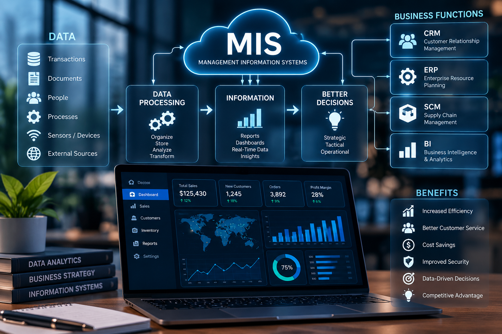

MIS & AI EthicsWebsite OverviewKeira FogelSeptember 29, 2026Home | AI Usage | Security | About Us  This website is about Management Information Systems and how they are used in everyday life. MIS helps businesses collect information and use it to make better decisions. I also talk about Artificial Intelligence and how it is becoming more common in school and work. The website explains the correct and incorrect ways to use AI. It also covers cybersecurity and some of the risks that come with technology. Overall, this website shows why MIS, AI, and security are important today. Management Information Systems help people and businesses organize information and make better decisions. This website explains MIS and how technology is used in different areas of everyday life. It also discusses Artificial Intelligence and some of the ways AI can be used in school and the workplace. Another part of the website explains the right and wrong ways to use AI. The website also covers cybersecurity and why protecting information is important. Together, these topics show how technology can be useful when it is used safely and responsibly.
|